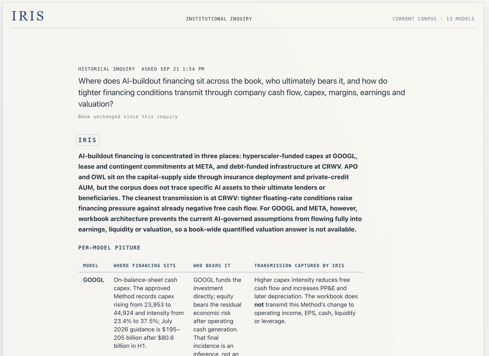
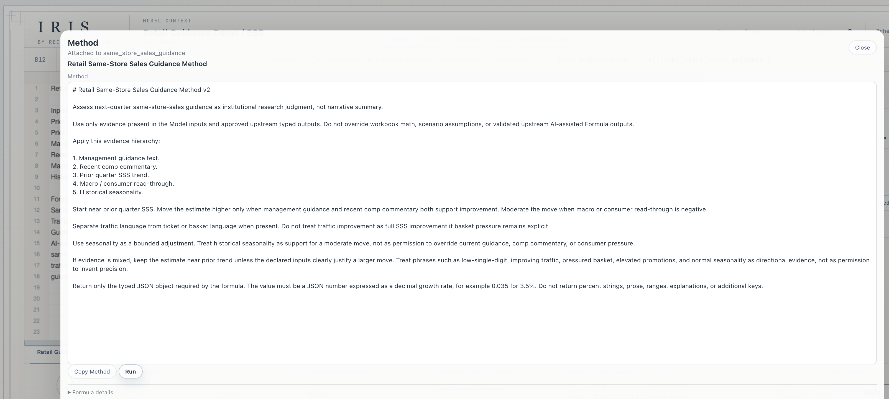
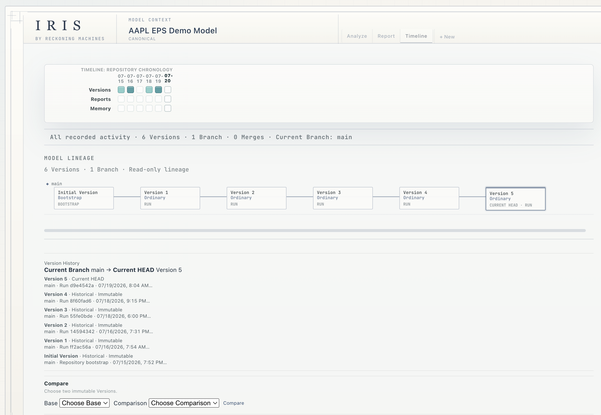
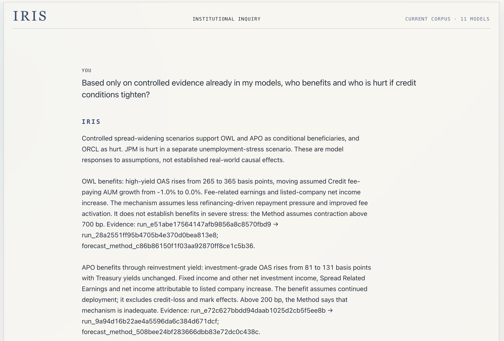
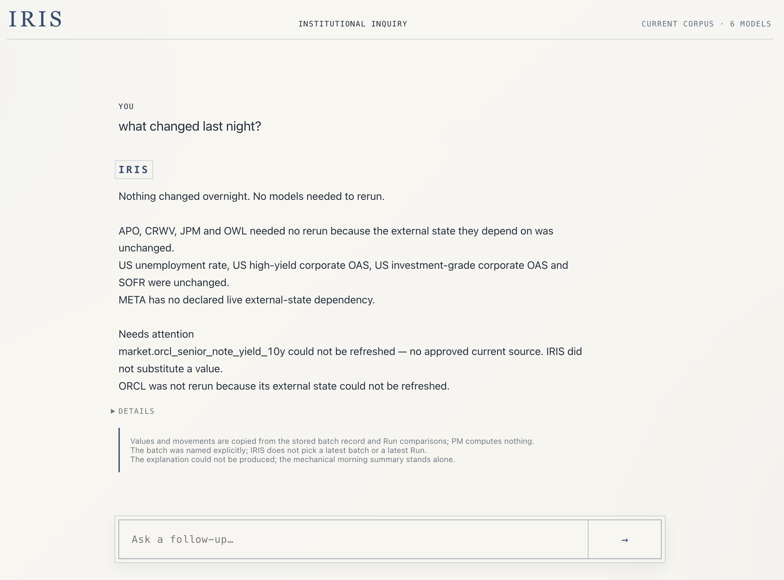

Explore freely
Ask anything of one model or the whole book. IRIS carries the model structure, research context, prior work and history into the question, so Claude can reason across the book without first reconstructing each spreadsheet.
“IRIS is like Cursor for financial models. Claude is your agent, Excel is your workspace, and IRIS keeps the research context and model history, learns how you build your estimates, refreshes models overnight, and lets you ask questions across the book.” - Hedge Fund Analyst
“What I wish I always had.” - Hedge fund PM
IRIS is a research intelligence system for equity and credit analysts / portfolio managers. Integrated with Claude and Codex, it reads the Excel models a research team already maintains, carries each analyst's forecast of the key drivers as an explicit and approved , and lets the desk question, test and revise the book without putting the working models at risk.
Case Study: Where does AI-related debt exposure sit?
Ask anything of one model or the whole book. IRIS carries the model structure, research context, prior work and history into the question, so Claude can reason across the book without first reconstructing each spreadsheet.
When analysis requires changing assumptions, IRIS shows exactly what would change and against which model state. Tests run against a fixed version and compare with a matched control, so the analyst can see what moved, why it moved and which assumptions caused the difference.
IRIS remembers the work worth keeping: model states, research context, analyst decisions and forecasting approaches. Those approaches can evolve through ordinary work and later drive repeatable updates, including overnight runs across the book.
IRIS imports each model in the book and works out how it is built: which periods are history and which are forecast, which cells are operating drivers and which are assumptions, and how each forecast flows through revenue, margins, cash flow and financing. That work is done once, on import, so every question that follows starts with the business rather than with the grid.
On top of the workbook sits what the team knows about it: the Method behind each key driver, the evidence it rests on, the conclusions analysts chose to keep, and every approved version together with the reason the numbers moved.
When a PM asks where AI financing sits across the book, the answer starts from all of that.
IRIS reads the formulas and assumptions already in the workbook and explains how volume and pricing build revenue, how margins turn sales into earnings, and how investment and working capital determine cash flow and financing needs, which gives the analyst a starting point for asking what matters and where to look more closely.
The analyst can ask what supports a margin assumption, what the latest filing says about funding needs, which part of the forecast looks least supported or what would change the investment view, and IRIS answers with the model already understood. That understanding stays with the model as the forecasts change, instead of being re-derived every time someone asks.
IRIS has a headless spreadsheet engine that represents a financial model as structured data, calculates supported formulas without opening Excel, and preserves every approved version of the model together with its history.
Every forecast in a model rests on a handful of key drivers, and behind each driver sits an analyst's judgment about which evidence matters and how it should move the number.
A Method is that judgment written down as a forecast of the driver, in the form of an instruction to the language model: the evidence it should weigh, the analytical rules it should apply, the limits it should respect and the output it should return. IRIS places the Method in the workbook through =AI(), so the driver is forecast in the cell and flows through every line that depends on it.
=AI()
IRIS can draft a Method from the model and the filings, but nothing shapes an estimate until the analyst has reviewed and approved it.

Each revision of a Method is kept as a new version, and a run that used an earlier version is replayed with that version rather than with the current one.
An analyst can change a market assumption or challenge the company outlook, and IRIS responds by proposing the specific cells it would change, none of which runs until the analyst approves the list. Ask what happens to interest expense if SOFR rises 100 basis points, and the response is a list of cells rather than a description of a scenario.
IRIS finds where SOFR enters the forecast and shows each cell it proposes to change beside what the model holds today. Market values are frozen at the moment of the proposal, and if the market moves before approval, IRIS refuses the stale value rather than running on it quietly.
Pressing Run executes two runs, a control carrying no assumptions and the sandbox bound to it, which share the same version, the same Methods and the same frozen market snapshot and differ only by the assumptions the analyst approved. The comparison is same-quarter, sandbox against control, so what the analyst reads is the difference the assumptions made rather than movement that was already in the forecast.
A run leaves the baseline untouched: the working model, its current version and every approved Method remain as they were, the sandbox and its control are preserved as immutable runs that can be compared at any time, and a note is written to the model only when the analyst chooses to save one.
A revised estimate should not erase the view that came before it, so IRIS keeps the Method behind the estimate, the evidence, the model change and the resulting financial impact together, and an analyst can return to any version to see what changed, why it changed, who approved it and how the change flowed through the model.

Every entry in the record is written explicitly, by an analyst or by an approved run, and is versioned. Nothing is absorbed in the background, and an earlier run is replayed as it stood at the time rather than as the system understands the model today.
The same move in rates, spreads, demand or pricing rarely affects two companies in the book the same way.
A PM who wants to know which models should change in response to a move in the market has traditionally had to ask each analyst in turn. PM View puts the question to every model at once and follows each answer back to the forecast, the assumptions and the evidence it rests on, while the models themselves, and the analysts who own them, remain the authority on what the numbers should be.
When the world changes, which of my models should change with it, and why?
IRIS can also refresh approved market and economic inputs overnight, identify which estimates depend on what changed, and rerun the affected analysis with the Methods the analysts approved, so the morning review begins with a list of which forecasts moved, which held and why, each with the assumptions and evidence behind it.


The inquiry starts with CoreWeave (CRWV), traces its financing obligations, asks who bears the exposure and examines what would change its value, with each answer setting up the next question, from the scheduled debt to the evidence an investment view would need.
It begins with evidence already in the model: lease obligations, the cash interest rate forecast, delayed-draw term loan (DDTL) and OEM financing disclosures, undrawn borrowing capacity, and equity. From there, it asks whether the exposure can be connected to other companies in the book.
A useful finding from the inquiry: in the exchange below, IRIS identifies the gap between forecasting contractual debt payments and estimating a DDTL's market value, and sets out what is still needed to close it: which loan is being valued and as of when, its expected cash flows, market pricing, contractual terms, and credit risks. The next question asks how to resolve each gap.
Carry the conclusion forward. None of the eleven questions changed the model. The analyst decides which of them produced something worth keeping and saves that as a note with the model, so that weeks later, when a colleague picks up the financing question, they start from the evidence, the interpretation and the questions that were still open.
Claude feels smarter and continuous because IRIS is quietly behind it.
Claude and Codex supply the reasoning, and IRIS supplies the models, the sandbox and the record, so an analyst can put a question to the book, follow it into a company model and test an assumption in one conversation, with the findings worth keeping saved to IRIS where the next analyst will find them.
The Model Catalog holds prepared company models, each with its coverage, checks and limitations described and with draft Methods for its key drivers waiting as proposals for review. An analyst adds an independent copy to the IRIS workspace, downloads the original workbook with its formulas and formatting intact, and works it in Excel through Claude or Codex, while every approved change, test and note travels back to IRIS, where the record of the model lives.
IRIS is built for research teams who want to use AI to keep their models up to date, to preserve the work behind each estimate, and to keep that work visible across the book. The analyst can work in the IRIS web app, with the Research Rail, the sandbox and the model history beside the workbook, or stay in Excel and reach IRIS through Claude or Codex, and in either case the models remain in the workbook, the analyst decides the Method, and the record is the same.